find_companion(𝒜,x);
| 𝒜 | :- | a matrix. |
| x | :- | the variable. |
Given a companion matrix, find_companion finds the polynomial from which it was made.

find_companion
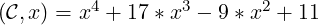
companion.
| Up | Next | Prev | PrevTail | Tail |
This package provides a selection of functions that are useful in the world of linear algebra.
This package provides a selection of functions that are useful in the world of linear algebra. These functions are described alphabetically in subsection 20.32.3 and are labelled 20.32.3.1 to 20.32.3.53. They can be classified into four sections(n.b: the numbers after the dots signify the function label in section 20.32.3).
Contributions to this package have been made by Walter Tietze (ZIB).
| add_columns | … | 20.32.3.1 | add_rows | … | 20.32.3.2 |
| add_to_columns | … | 20.32.3.3 | add_to_rows | … | 20.32.3.4 |
| augment_columns | … | 20.32.3.5 | char_poly | … | 20.32.3.9 |
| column_dim | … | 20.32.3.12 | copy_into | … | 20.32.3.14 |
| diagonal | … | 20.32.3.15 | extend | … | 20.32.3.16 |
| find_companion | … | 20.32.3.17 | get_columns | … | 20.32.3.18 |
| get_rows | … | 20.32.3.19 | hermitian_tp | … | 20.32.3.21 |
| matrix_augment | … | 20.32.3.28 | matrix_stack | … | 20.32.3.30 |
| minor | … | 20.32.3.31 | mult_columns | … | 20.32.3.32 |
| mult_rows | … | 20.32.3.33 | pivot | … | 20.32.3.34 |
| remove_columns | … | 20.32.3.37 | remove_rows | … | 20.32.3.38 |
| row_dim | … | 20.32.3.39 | rows_pivot | … | 20.32.3.40 |
| stack_rows | … | 20.32.3.43 | sub_matrix | … | 20.32.3.44 |
| swap_columns | … | 20.32.3.46 | swap_entries | … | 20.32.3.47 |
| swap_rows | … | 20.32.3.48 |
Functions that create matrices.
| band_matrix | … | 20.32.3.6 | block_matrix | … | 20.32.3.7 |
| char_matrix | … | 20.32.3.8 | coeff_matrix | … | 20.32.3.11 |
| companion | … | 20.32.3.13 | hessian | … | 20.32.3.22 |
| hilbert | … | 20.32.3.23 | mat_jacobian | … | 20.32.3.24 |
| jordan_block | … | 20.32.3.25 | make_identity | … | 20.32.3.27 |
| random_matrix | … | 20.32.3.36 | toeplitz | … | 20.32.3.50 |
| Vandermonde | … | 20.32.3.52 | Kronecker_Product | … | 20.32.3.53 |
| char_poly | … | 20.32.3.9 | cholesky | … | 20.32.3.10 |
| gram_schmidt | … | 20.32.3.20 | lu_decom | … | 20.32.3.26 |
| pseudo_inverse | … | 20.32.3.35 | simplex | … | 20.32.3.41 |
| svd | … | 20.32.3.45 | triang_adjoint | … | 20.32.3.51 |
There is a separate NORMFORM package described in section 20.37 for computing the following matrix normal forms in REDUCE:
smithex, smithex_int, frobenius, ratjordan, jordansymbolic, jordan.
| matrixp | … | 20.32.3.29 | squarep | … | 20.32.3.42 |
| symmetricp | … | 20.32.3.49 |
In the examples the matrix 𝒜 will be
|
𝒜 = 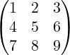 |
Throughout ℐ is used to indicate the identity matrix and 𝒜T to indicate the transpose of the matrix 𝒜.
If you have not used matrices within REDUCE before then the following may be helpful.
Initialisation of matrices takes the following syntax:
mat1 := mat((a,b,c),(d,e,f),(g,h,i));
will produce
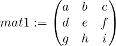
The (i,j)th entry can be accessed by:
mat1(i,j);
The package is loaded by:
load_package linalg;
| 𝒜 | :- | a matrix. |
| c1, c2 | :- | positive integers. |
| expr | :- | a scalar expression. |
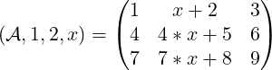
add_rows
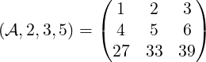
See: add_columns.
| 𝒜 | :- | a matrix. |
| column_list | :- | a positive integer or a list of positive integers. |
| expr | :- | a scalar expression. |
add_to_rows performs the equivalent task on the rows of 𝒜.
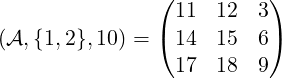
add_to_rows
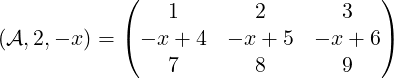
See: add_to_columns.
| 𝒜 | :- | a matrix. |
| column_list | :- | either a positive integer or a list of positive integers. |
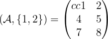
stack_rows
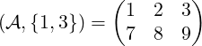
| expr_list | :- | either a single scalar expression or a list of an odd number of scalar expressions. |
| square_size | :- | a positive integer. |
band_matrix
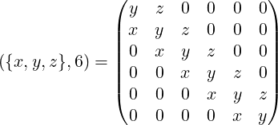
| r,c | :- | positive integers. |
| matrix_list | :- | a list of matrices. |
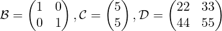
block_matrix
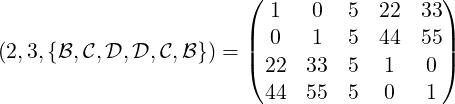
| 𝒜 | :- | a square matrix. |
| λ | :- | a symbol or algebraic expression. |
char_matrix
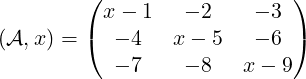
| 𝒜 | :- | a square matrix. |
| λ | :- | a symbol or algebraic expression. |
This is the determinant of λℐ−𝒜.
| 𝒜 | :- | a positive definite matrix containing numeric entries. |
It returns {ℒ,𝒰} where ℒ is a lower matrix, 𝒰 is an upper matrix,
𝒜 = ℒ𝒰, and 𝒰 = ℒT .
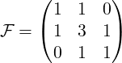
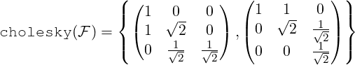
| lin_eqn1,lin_eqn2, …,lin_eqnn | :- | linear equations. Can be of the form equation = number or just equation which is equivalent to equation = 0. |
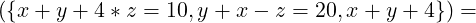
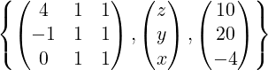
| 𝒜 | :- | a matrix. |
| poly | :- | a monic univariate polynomial in x. |
| x | :- | the variable. |
This is the square matrix of dimension n, where n is the degree of poly w.r.t. x. The entries of 𝒞 are: 𝒞(i,n) = −coeffn(poly,x,i − 1) for i = 1,…,n, 𝒞(i,i − 1) = 1 for i = 2,…,n and the rest are 0.
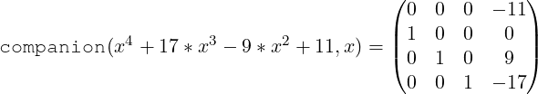
| 𝒜,ℬ | :- | matrices. |
| r,c | :- | positive integers. |
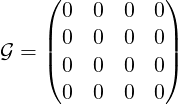
copy_into
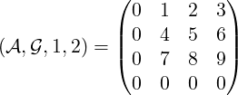
| mat1,mat2, …,matn | :- | each can be either a scalar expr or a square matrix. |
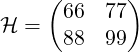
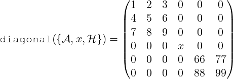
| 𝒜 | :- | a matrix. |
| r, c | :- | positive integers. |
| expr | :- | algebraic expression or symbol. |
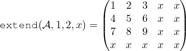
| 𝒜 | :- | a matrix. |
| x | :- | the variable. |
find_companion

| 𝒜 | :- | a matrix. |
| c | :- | either a positive integer or a list of positive integers. |
get_rows performs the same task on the rows of 𝒜.
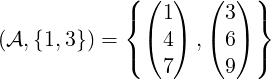
get_rows
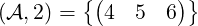
| vec1,vec2, …,vecn | :- | linearly-independent vectors. Each vector must be written as a list, eg:{1,0,0}. |
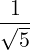
,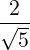
},{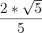
,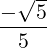
}}
| 𝒜 | :- | a matrix. |
This is a matrix in which the (i,j)th entry is the conjugate of the (j,i)th entry of 𝒜.
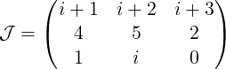
hermitian_tp
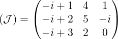
| expr | :- | a scalar expression. |
| variable_list | :- | either a single variable or a list of variables. |
This is an n×n matrix where n is the number of variables and the (i,j)th entry is df(expr,variable_list(i),variable_list(j)).
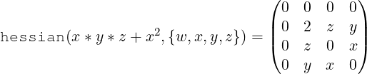
| square_size | :- | a positive integer. |
| expr | :- | an algebraic expression. |
This is the symmetric matrix in which the (i,j)th entry is 1∕(i + j −expr).
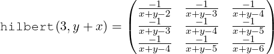
| expr_list | :- | either a single algebraic expression or a list of algebraic expressions. |
| variable_list | :- | either a single variable or a list of variables. |
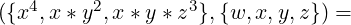
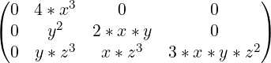
NOTE: The function mat_jacobian used to be called just "jacobian" however us of that name was in conflict with another Reduce package.
| expr | :- | an algebraic expression or symbol. |
| square_size | :- | a positive integer. |
The entries of 𝒥 are: 𝒥 (i,i) = expr for i = 1,…,n, 𝒥 (i,i + 1) = 1 for i = 1,…,n − 1, and all other entries are 0.
jordan_block(x,5)
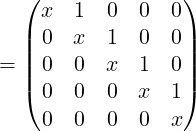
| 𝒜 | :- | a matrix containing either numeric entries or imaginary entries with numeric coefficients. |
Caution: The algorithm used can swap the rows of 𝒜 during the calculation. This means that ℒ𝒰 does not equal 𝒜 but a row equivalent of it. Due to this, lu_decom returns {ℒ,𝒰,vec}. The call convert(𝒜,vec) will return the matrix that has been decomposed, ie: ℒ𝒰 = convert(𝒜,vec).
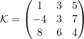
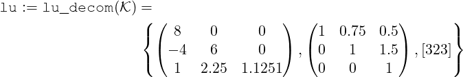 |
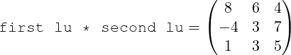
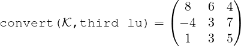
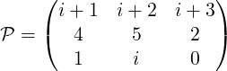
| lu := lu_decom(𝒫) = | 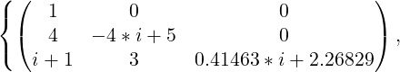 | ||
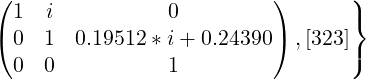 |
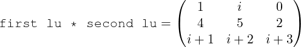
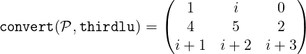
| square_size | :- | a positive integer. |
make_identity(4)
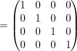
| mat1,mat2, …,matn | :- | matrices. |
matrix_stack sticks the matrices in matrix_list together vertically.
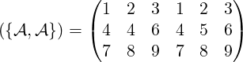
matrix_stack
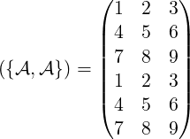
| test_input | :- | anything you like. |
matrixp(doodlesackbanana) = nil
| 𝒜 | :- | a matrix. |
| r, c | :- | positive integers. |
This is created by removing the rth row and the cth column from 𝒜.
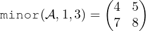
| 𝒜 | :- | a matrix. |
| column_list | :- | a positive integer or a list of positive integers. |
| expr | :- | an algebraic expression. |
mult_rows performs the same task on the rows of 𝒜.
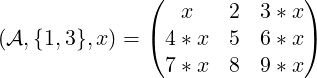
mult_rows
| 𝒜 | :- | a matrix. |
| r,c | :- | positive integers such that 𝒜(r,c)≠0. |
To do this, multiples of the r’th row are added to every other row in the matrix.
This means that the c’th column will be 0 except for the (r,c)’th entry.
| 𝒜 | :- | a matrix containing only real numeric entries. |
Given the singular value decomposition of 𝒜, i.e: 𝒜 = 𝒰Σ𝒱T , then the pseudo inverse 𝒜† is defined by 𝒜† = 𝒱Σ†𝒰T . For the diagonal matrix Σ, the pseudoinverse Σ† is computed by taking the reciprocal of only the nonzero diagonal elements.
If 𝒜 is square and non-singular, then 𝒜† = 𝒜. In general, however, 𝒜𝒜†𝒜 = 𝒜, and 𝒜†𝒜𝒜† = 𝒜†.
Perhaps more importantly, 𝒜† solves the following least-squares problem: given a rectangular matrix 𝒜 and a vector b, find the x minimizing ∥𝒜x − b∥2, and which, in addition, has minimum ℓ2 (euclidean) Norm, ∥x∥2. This x is 𝒜†b.
| ℛ = , pseudo_inverse(ℛ) = |
| r,c, limit | :- | positive integers. |
| imaginary | :- | if on, then matrix entries are x + iy where −limit < x,y < limit. |
| not_negative | :- | if on then 0 < entry < limit. In the imaginary case we have 0 < x,y < limit. |
| only_integer | :- | if on then each entry is an integer. In the imaginary case x,y are integers. |
| symmetric | :- | if on then the matrix is symmetric. |
| upper_matrix | :- | if on then the matrix is upper triangular. |
| lower_matrix | :- | if on then the matrix is lower triangular. |
on only_integer, not_negative, upper_matrix, imaginary;
| 𝒜 | :- | a matrix. |
| column_list | :- | either a positive integer or a list of positive integers. |
remove_rows performs the same task on the rows of 𝒜.
remove_rows
See: column_dim.
| 𝒜 | :- | a matrix. |
| r,c | :- | positive integers such that 𝒜(r,c) neq 0. |
| row_list | :- | positive integer or a list of positive integers. |
rows_pivot
| ⟨max/min⟩ | :- | either max or min (signifying maximise and minimise). |
| ⟨objective function⟩ | :- | the function you are maximising or minimising. |
| ⟨linear inequalities⟩ | :- | the constraint inequalities. Each one must be of
the form |
| ⟨bounds⟩ | :- | bounds on the variables as specified for the LP file format. Each bound is of one of the forms l ≤ v, v ≤ u, or l ≤ v ≤ u, where v is a variable and l, u are numbers or infinity or -infinity |
It returns {optimal value,{ values of variables at this optimal}}.
The {bounds} argument is optional and admissible only when the switch fastsimplex is on, which is the default.
Without a {bounds} argument, the algorithm implies that all the variables are non-negative.
| 𝒜 | :- | a matrix. |

See: augment_columns.
| 𝒜 | :- | a matrix. |
| row_list, column_list | :- | either a positive integer or a list of positive integers. |
sub_matrix
| 𝒜 | :- | a matrix containing only real numeric entries. |
Let k = min(m,n). Then U is m × k, V is n × k, and and Σ = diag(σ1,…,σk), where σi ≥ 0 are the singular values of 𝒜; only r of these are non-zero. The singular values are the non-negative square roots of the eigenvalues of 𝒜T 𝒜.
𝒰 and 𝒱 are such that 𝒰𝒰T = 𝒱𝒱T = 𝒱T 𝒱 = ℐk.
Note: there are a number of different definitions of SVD in the literature, in some of which Σ is square and U and V rectangular, as here, but in others U and V are square, and Σ is rectangular.

| 𝒜 | :- | a matrix. |
| c1,c1 | :- | positive integers. |
swap_rows performs the same task on 2 rows of 𝒜.
swap_columns
| 𝒜 | :- | a matrix. |
| r1,c1,r2,c2 | :- | positive integers. |
swap_entries
| 𝒜 | :- | a matrix. |
| expr1,expr2, …,exprn | :- | algebraic expressions. |
This is a square symmetric matrix in which the first expression is placed on the diagonal and the i’th expression is placed on the (i-1)’th sub and super diagonals.
It has dimension n where n is the number of expressions.
| 𝒜 | :- | a matrix. |
triang_adjoint computes the triangularizing adjoint ℱ of matrix 𝒜 due to the algorithm of Arne Storjohann. ℱ is lower triangular matrix and the resulting matrix 𝒯 of ℱ∗𝒜 = 𝒯 is upper triangular with the property that the i-th entry in the diagonal of 𝒯 is the determinant of the principal i-th submatrix of the matrix 𝒜.
| expr1,expr2, …,exprn | :- | algebraic expressions. |
| M1,M2 | :- | Matrices |
Many of the ideas for this package came from the Maple[3] Linalg package [4].
The algorithms for cholesky, lu_decom, and svd are taken from the book Linear Algebra - J.H. Wilkinson & C. Reinsch[5].
The gram_schmidt code comes from Karin Gatermann’s Symmetry package[6] for REDUCE.
| Up | Next | Prev | PrevTail | Front |